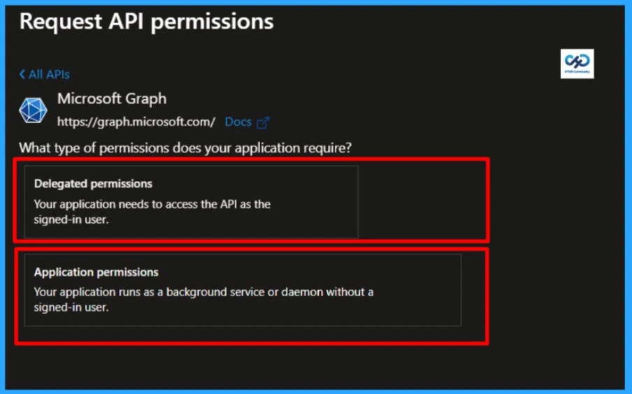
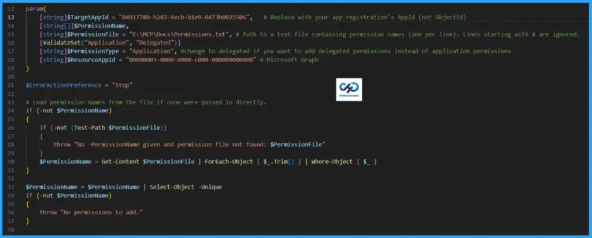
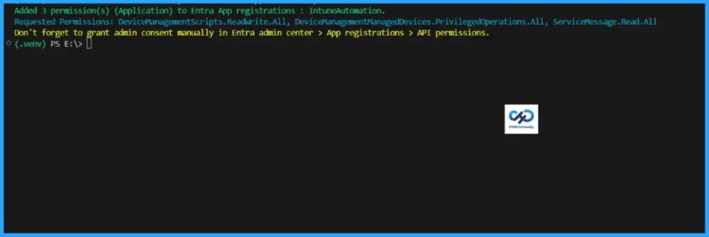
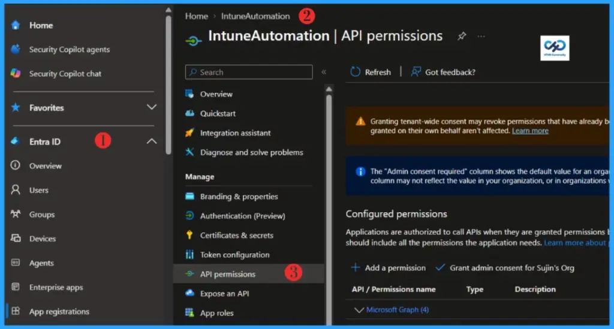
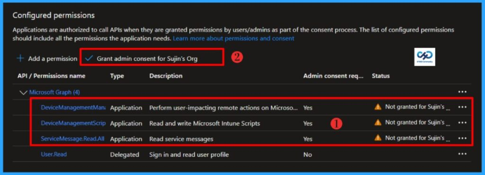
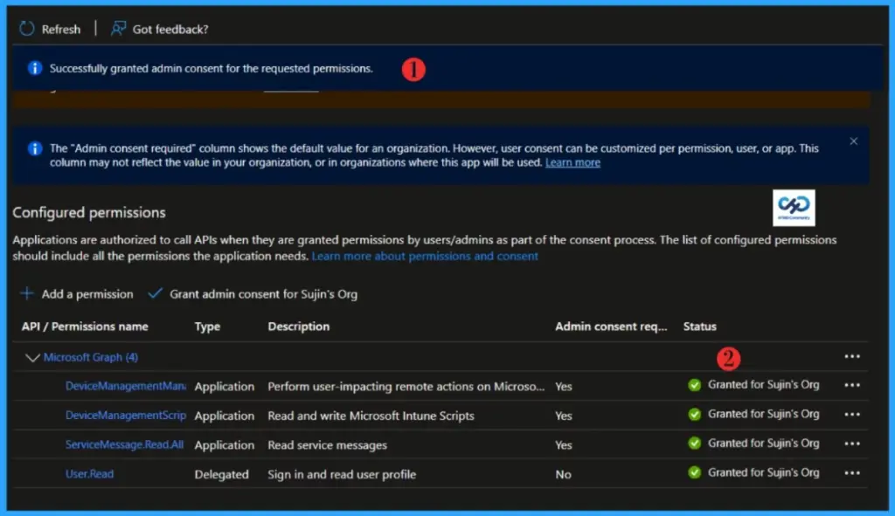

Key Takeaways
- App Registration creates an identity record for an application in Entra ID.
- It enables apps to authenticate against Microsoft Entra ID.
- App Registrations define how apps integrate with Microsoft services and APIs.
- They generate unique identifiers (Client ID, Tenant ID) for secure access.
Automating Bulk Graph API Permission Assignment in Microsoft Entra App Registrations! App registrations in Microsoft Entra form the backbone of application identity, enabling secure authentication, seamless API integration, and precise permission management across modern cloud environments. While they establish the identity and integration points, the real challenge lies in managing an ever‑expanding set of permissions, an area where automation significantly reduces manual effort, improves consistency, and minimises errors.
Table of Contents
Understanding API Permissions in Microsoft Entra ID
When working with the Microsoft identity platform, permissions and consent are at the heart of building secure applications. They define how apps interact with protected resources and ensure that access is granted only with the right level of authorisation. This article walks through the core principles of permissions and consent, showing how developers and administrators can design applications that request access responsibly and transparently.
By applying these concepts, you can build solutions that inspire trust while maintaining strong security boundaries. Consider scenarios where an application needs to connect to Microsoft 365 services, such as reading email, accessing calendar events, or retrieving Intune device compliance data. In each case, the app must first obtain authorisation from the resource owner. Depending on the scope of access requested, users or administrators can grant or deny consent.
For Intune, this might involve permissions to manage device policies, read compliance status, or configure applications across enrolled devices. By understanding how permissions and consent operate, you can ensure your applications request only what they truly need, at the right time, and from the right audience, resulting in secure, efficient, and trustworthy integrations.
Difference Between Delegated Access and App-only Access
Access models in Microsoft Entra can be broadly divided into two scenarios: delegated access and app‑only access. Each approach defines how an application interacts with resources and what type of permissions are required.

Delegated Access
In a delegated scenario, a user signs into a client application, and the app performs actions on behalf of that user. This requires delegated permissions-often referred to as scopes-which specify exactly what the app can do with the user’s identity. Both the user and the client application must be authorised: the user grants consent, and the app must be configured with the correct scopes. For example, an Intune‑integrated app might request delegated permissions to read device compliance details or manage app configurations, but only while acting under a signed‑in user’s authority.
App‑Only Access
In contrast, app‑only access allows an application to operate independently, without a user session. This model is common in automation, background services, and scenarios such as scheduled backups, where user context is unnecessary or impractical. Instead of delegated scopes, app‑only access relies on application permissions (sometimes called app roles). Once administrators grant these permissions, the app can directly call resource APIs, such as Intune, to retrieve device inventory, enforce compliance policies, or push configuration updates across the tenant. This approach ensures secure, large‑scale operations without tying actions to a single user account.
| Feature / Scenario | Delegated Access | App‑Only Access |
|---|---|---|
| User Context | Requires a signed‑in user; app acts on behalf of that user. | No user required; app runs independently. |
| Permission Type | Delegated permissions (scopes). | Application permissions (app roles). |
| Authorization Flow | Both the user and the client app must be authorised separately. | Only the client app needs to be authorized. |
| Consent Source | Consent granted by the user or administrator. | Consent granted by administrator only. |
| Use Cases | Apps needing user‑specific data (e.g., reading a user’s email, calendar, or Intune device compliance tied to that user). | Automation, background services, daemons, or tenant‑wide operations (e.g., Intune policy enforcement, device inventory, or bulk configuration). |
| Scope of Access | Limited to the signed‑in user’s data and actions. | Broad, tenant‑level access across all users/devices depending on permissions. |
| Examples | A helpdesk app checking compliance for a specific user’s device. | A scheduled service pulling Intune compliance reports for all devices nightly. |
Automation to Add Graph API Permissions in Microsoft Entra App Registration
Well, let’s see how we can automate the process of adding bulk Graph API Permission Assignment in Microsoft Entra App Registrations. Certainly, you can use the same code to add a single permission as well. Below are the prerequisites to run the code.
- Have the App ID of your Microsoft Entra App Registration available
- Ensure the Microsoft Graph PowerShell module is installed on your system.
- Verify your account has the Application.ReadWrite.All permission assigned before running the code.
Read more : Best Guide to Install Microsoft Graph PowerShell ModulesThe list of API permissions must be stored in a text file and assigned to the $PermissionFile variable, and you should ensure that the $ResourceAppId.You can assign API permissions as either Application type or Delegated type. If your app requires delegated permissions, change the $PermissionType variable to Delegated. By default, the permission type is set to Application.
# Add-EntraAppPermission.ps1
# Adds an API permission (Application or Delegated) to an app registration in Entra ID.
# Developer: Sujin Nelladath
# LinkedIn: https://www.linkedin.com/in/sujin-nelladath-8911968a/
# Version: 1.0.0
#
# Note: this only the permission request. You still need to go click
# "Grant admin consent" in the Entra admin center afterwards.
#
param(
[string]$TargetAppId = "Enter the AppId here", # Replace with your app registration's AppId (not ObjectId)
[string[]]$PermissionName,
[string]$PermissionFile = "E:\Permissions.txt", # Path to a text file containing permission names (one per line). Lines starting with # are ignored.
[ValidateSet("Application", "Delegated")]
[string]$PermissionType = "Application", #change to delegated if you want to add delegated permissions instead of application permissions
[string]$ResourceAppId = "00000003-0000-0000-c000-000000000000" # Microsoft Graph
)
$ErrorActionPreference = "Stop"
# Load permission names from the file if none were passed in directly.
if (-not $PermissionName)
{
if (-not (Test-Path $PermissionFile))
{
throw "No -PermissionName given and permission file not found: $PermissionFile"
}
$PermissionName = Get-Content $PermissionFile | ForEach-Object { $_.Trim() } | Where-Object { $_ }
}
$PermissionName = $PermissionName | Select-Object -Unique
if (-not $PermissionName)
{
throw "No permissions to add."
}
Connect-MgGraph -Scopes "Application.ReadWrite.All" -NoWelcome
# --- Look up the resource app (e.g. Microsoft Graph) and the permissions on it ---
$resourceApp = (Invoke-MgGraphRequest -Uri "v1.0/servicePrincipals?`$filter=appId eq '$ResourceAppId'").value[0]
if (-not $resourceApp)
{
throw "Resource app '$ResourceAppId' not found in this tenant."
}
$isAppPermission = $PermissionType -eq "Application"
$availablePerms = if ($isAppPermission) { $resourceApp.appRoles } else { $resourceApp.oauth2PermissionScopes }
$accessType = if ($isAppPermission) { "Role" } else { "Scope" }
$permsToResolve = @()
foreach ($name in $PermissionName)
{
$match = $availablePerms | Where-Object { $_.value -eq $name }
if (-not $match)
{
throw "Permission '$name' ($PermissionType) not found on $($resourceApp.displayName)."
}
$permsToResolve += $match
}
# --- Look up the target app registration ---
$targetApp = (Invoke-MgGraphRequest -Uri "v1.0/applications?`$filter=appId eq '$TargetAppId'").value[0]
if (-not $targetApp)
{
throw "App registration '$TargetAppId' not found."
}
# --- Work out which permissions are new, and add them ---
$access = @($targetApp.requiredResourceAccess)
$existingEntry = $access | Where-Object { $_.resourceAppId -eq $ResourceAppId }
$existingIds = @()
if ($existingEntry)
{
$existingIds = $existingEntry.resourceAccess | ForEach-Object { $_.id }
}
$newPerms = @()
foreach ($perm in $permsToResolve)
{
if ($existingIds -contains $perm.id)
{
Write-Host "'$($perm.value)' is already on $($targetApp.displayName) - skipping." -ForegroundColor Red
}
else
{
$newPerms += @{ id = $perm.id; type = $accessType }
}
}
if ($newPerms.Count -eq 0)
{
Write-Host "Nothing to do - all requested permissions are already there." -ForegroundColor Yellow
return
}
if ($existingEntry)
{
$existingEntry.resourceAccess = @($existingEntry.resourceAccess) + $newPerms
}
else
{
$access += @{ resourceAppId = $ResourceAppId; resourceAccess = $newPerms }
}
$body = @{ requiredResourceAccess = $access } | ConvertTo-Json -Depth 10
Invoke-MgGraphRequest -Method Patch -Uri "v1.0/applications/$($targetApp.id)" -Body $body | Out-Null
Write-Host "Added $($newPerms.Count) permission(s) ($PermissionType) to Entra App registrations : $($targetApp.displayName)." -ForegroundColor Green
Write-Host "Requested Permissions: $($PermissionName -join ', ')" -ForegroundColor DarkCyan
Write-Host "Don't forget to grant admin consent manually in Entra admin center > App registrations > API permissions." -ForegroundColor Yellow
DeviceManagementScripts.ReadWrite.All, DeviceManagementManagedDevices.PrivilegedOperations.All, ServiceMessage.Read. For this automation, the requested API permissions are listed below along with the corresponding output.
Download the code : Add-EntraAppPermission.ps1
Verify & Grant Admin Consent Manually in Entra Admin Center
The automation executed successfully. At the end of the run, you may have noticed a warning: Don’t forget to grant admin consent manually in the Entra admin center > App registrations > API permissions. The script does not grant admin consent automatically; it is intentionally designed to ensure that all requested permissions are reviewed thoroughly before consent is granted manually. Let me show you how to perform this step in the Entra portal.
- Sign in to the Microsoft Entra admin center with your credentials.
- Then go to Entra ID > App Registration
- Select the application you want to configure.
- Go to API permissions.

Locate Grant admin consent, review the requested permissions, and grant consent manually. I have requested DeviceManagementScripts.ReadWrite.All, DeviceManagementManagedDevices.PrivilegedOperations.All, ServiceMessage.Read.All

End Result
The current status shows Not granted for Sujin’s Org. After clicking Grant admin consent for Sujin’s Org, the status will update to Granted for Sujin’s Org and display a green check mark.

Need Further Assistance or Have Technical Questions?
Join the LinkedIn Page and Telegram group to get the latest step-by-step guides and news updates. Join our Meetup Page to participate in User group meetings. Also, Join the WhatsApp Community to get the latest news on Microsoft Technologies. We are there on Reddit as well.Author
About the Author: Sujin Nelladath, a Microsoft Graph MVP with over 13 years of experience in Intune device management and Automation solutions, writes and shares his experiences with Microsoft device management technologies, Azure, DevOps, Graph API and PowerShell automation.